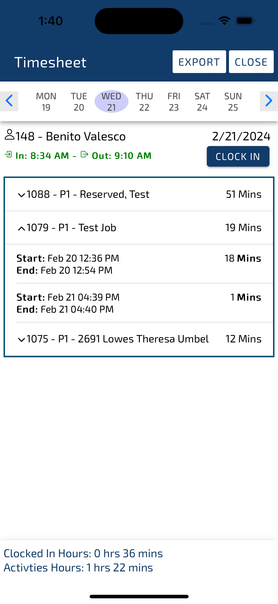

Resource Clock App
This project provided a valuable opportunity to refine my mobile app development skills,
focusing on crafting intuitive
UI/UX that even those not familiar with technology can navigate with ease. It was imperative
to create simple,
user-friendly designs that facilitate effortless interaction. In addition, I worked on
integrating backend services and
managing data synchronization for offline use, ensuring a seamless user experience across
all functionalities.
Some of the screenshots were uploaded below
-
-

-

-

-

-

Technologies Used
-
Ionic Framework
-
Angular
-
ASP.NET C#
-
SQLite
-
SQL
Features and Functionalities
-
Custom Domain Integration: Allows the app to operate on various customer URLs, enhancing adaptability.
-
Pin-Based Secure Login: Ensures user security with a PIN login system.
-
Eased Clock-IN/Clock-Out functionality
-
Time Log Tab: Displays detailed work hours and allows for easy management of time records.
-
Activities Tab: Provides an overview of daily tasks, materials, and areas worked on, with the option to add notes.
-
Mobile Storage Utilization: Safely stores attachments in the device's storage directory for convenience and security.
-
Stores data in SQLite and syncs with server when in online.